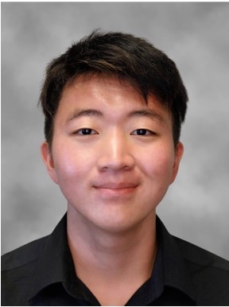
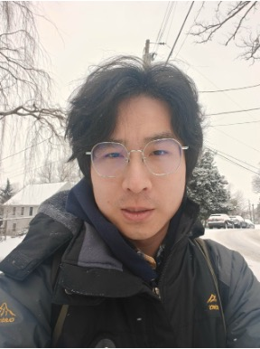

Students
Graduate Students
 |
Research interests: Efficient AI software-hardware co-design, generative models, and computer architecture. Email: zqv4ds@virginia.edu |
|
Research interests: Digital/mixed-signal IC design, AI chips based on computing-in-memory, and computer architecture. Email: peilin@virginia.edu |
For graduate students: Check the research and publication first. If you are interested, please email me your research experience, motivations, interests, publications (if applicable), CV, and transcripts.
Undergraduate Students
|  |
Research interests: System integration, embedded security, and hardware-software optimization. Email: mkq7uv@virginia.edu |
|  | Junting Huo Research interests: IC design and embedded system. Email: jaj8rm@virginia.edu |
For undergraduates: Opportunities include participating in research projects through ECE 4907 Electrical Engineering Projects, joining a summer internship in our group supported by the Dean's Undergraduate Engineering Research Fellowships, and more. Send me an email with your CV, transcript, and the topics that you are interested in or would like to discuss further.